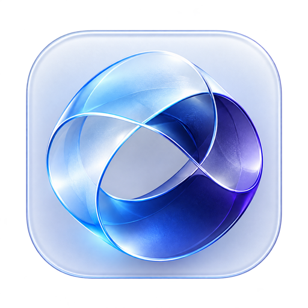
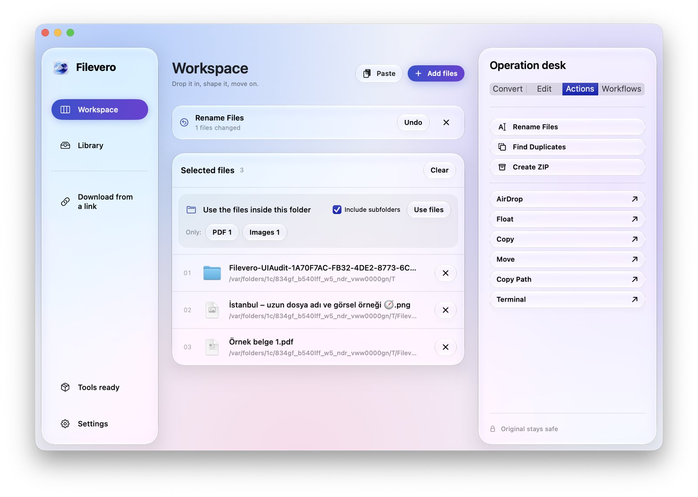
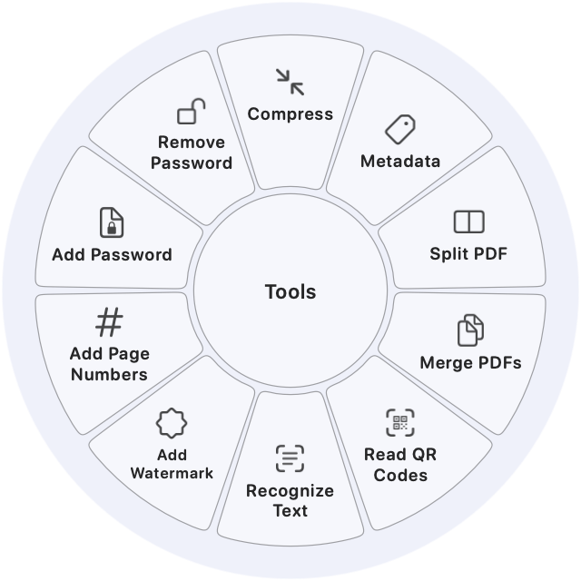
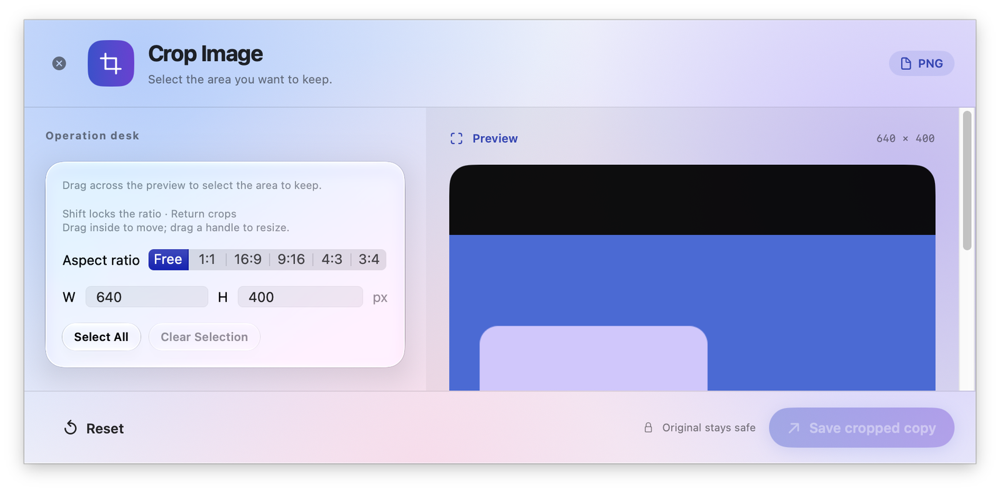
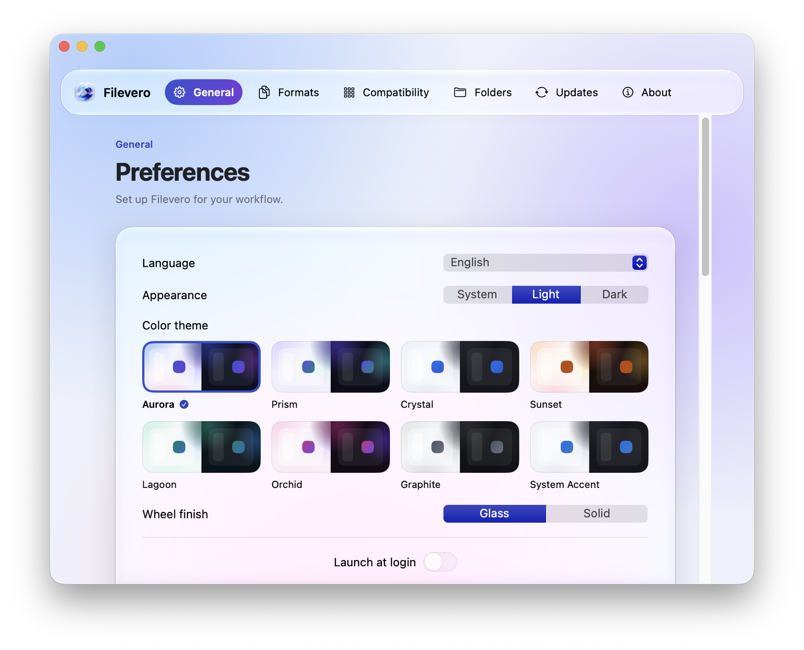
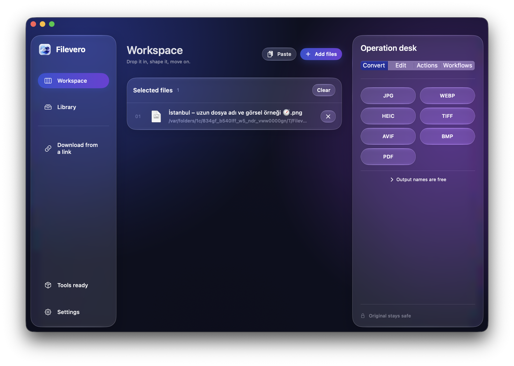
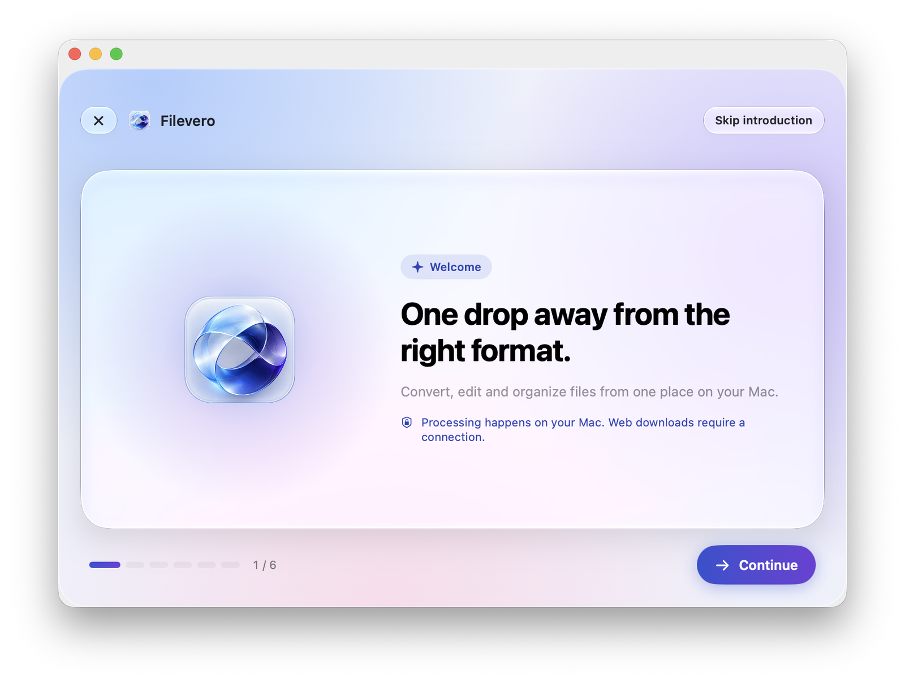

Seç veya sürükle
Ana ekrandan dosya seç veya Finder’da dosyayı sürüklerken Shift, Command ya da Control basılı tut.

FileveroBir dosya sürükle. Bir tuşa bas. İstediğin hale getir. Dönüştür, kırp, düzenle; işine kaldığın yerden devam et.
Dosyaların sende kalır. Yerel işlem. Abonelik yok.
Mac (Apple Silicon) ve Windows (x64) sürümlerini GitHub Releases sayfasından indir ya da GitHub’daki kaynak koddan derle. Açtıktan sonra medya ve Office araçlarının doğrulanmış indirmeleri için bir kez Kurulumu tamamla → Eksik araçları indir’i seç. Temel yerel görsel ve PDF özellikleri hemen çalışır.
Mac disk görüntüsünü aç ve Filevero’yu Uygulamalar’ın üzerine sürükle. Mac indirmeleri henüz Apple tarafından notarize edilmedi: ilk açılıştan sonra Sistem Ayarları → Gizlilik ve Güvenlik’te Yine de Aç’ı seç. Windows sürümleri henüz Authenticode ile imzalı değil; SmartScreen onay isteyebilir.
Ana ekrandan dosya seç veya Finder’da dosyayı sürüklerken Shift, Command ya da Control basılı tut.
Formatı veya aracı seç. Düzenlemeyi önizle; hassas ayarlar için klavyeyi kullan.
Gerçek ilerlemeyi izle ve yeni çıktıyı kaydet. Tamamlandığında kısa, çerçevesiz bir bildirim görünür.
Bilgisayarından çıkmayan tek tıkla nesne ayıklama: Mac’te Apple Vision, Windows’ta açık ISNet modeli. Anında saydam PNG.
Instagram, YouTube, X, LinkedIn ve web bannerları için hazır en-boy oranları ve piksel boyutları.
Herhangi bir dosyayı menü çubuğu simgesine sürükleyerek radyal çarkı anında açın.
DNG, CR2, CR3, NEF, ARW, RW2 ve ORF kamera formatlarını doğrudan yerel motorla dönüştürün.
Kestirmeler uygulamasıyla dosya dönüştürme, arka plan kaldırma ve sıkıştırma otomasyonu.
Mac ve Windows’un ortak araç kataloğu. Platforma özgü ayrıntılar aşağıda listelenir.
Görsel, video, ses ve PDF sıkıştırma. Desteklenen türlerde kalite, küçültme oranı veya hedef boyut seçilir; ulaşılamayan hedefler açıklanır.
Desteklenen görsel, PDF ve medya metadatasını incele, düzenle veya kaldır. Track/chapter alanları dahil; yeni kopya oluşturulur.
Boyutlandır, döndür, yansıt; parlaklık, kontrast ve doygunluğu önizleyerek ayarla.
Bağımsız serbest çizim/marker ve şekiller, metin, oklar ve Select / Move. Her çizim aracı tek başına çalışır.
Kenar boşluğu, arka plan, köşe ve gölge ayarlarıyla görsel çerçevesi oluştur.
Sürükleyerek alan seç, taşı veya boyutlandır. Shift oranı kilitler; Enter kırpılmış kopyayı kaydeder.
Ana nesneyi otomatik ayıkla ve saydam PNG olarak kaydet; işlem aygıtta yapılır: Mac’te Apple Vision, Windows’ta ONNX Runtime ile açık ISNet modeli.
Önce ses yüksekliği analiz edilir; hedef loudness, aralık ve true-peak değerleriyle kopya kaydedilir.
Video akışını koruyarak sessiz bir kopya oluştur.
Önizle, In/Out tutamaçlarını sürükle, seçimi taşı ve aralığı dışa aktar. Klavyeyle oynatma, gezinme ve I/O kesimi kolaylaştırır.
Sayfa aralıklarını ve dosya başına sayfa sayısını seçerek PDF’yi tek tek veya gruplar halinde böl.
Sayfaları sırala, çıkar ve döndür. Eşit genişlik seçeneği, belge özelliklerinin güvenle korunabildiği dosyalarda kullanılır.
ZIP, TAR, GZIP ve RAR arşivlerini yeni klasöre çıkar. Yol ve link denetimleri klasör dışına yazmayı engeller.
Seçili görselleri istenen sırayla yeni bir PDF’de birleştir.
Birden fazla PDF’yi desteklenen sayfa içeriği ve gezinme özellikleri korunarak birleştir; orijinaller değişmez.
Video önizlemesinde alan seç. Sürükle, boyutlandır; Shift ile oranı kilitle, Enter ile kopyayı dışa aktar.
Önizleme kontrolleriyle video hızını ve buna eşlik eden ses temposunu değiştir.
Klipleri sırayla birleştir; boyut, kare hızı ve ses düzeni tutarlı bir çıktıya uyarlanır.
Zaman noktalarını seçip kareleri yeni PNG dosyaları olarak kaydet.
İşaretlerden, eşit klip sayısından veya aralıklardan böl. İstenmeyen parçaları çıkar; kalanları ayrı veya birleşik kaydet.
Ses dosyasından waveform, spektrum, frekans çubukları veya sabit görselle video oluştur.
Waveform önizleme, In/Out tutamaçları ve seçili aralığı oynatma. İsteğe bağlı sessizlik kesme ve klavyeyle gezinme.
Mono/stereo dönüşümü yap, sol/sağ seviyelerini ayarla ve kanalları önizle.
Birden fazla görseli aralık ve arka plan ayarlarıyla düzenlenebilir bir kolajda birleştir.
Alan seçip düz renk, blur veya pikselleştirme uygula. Paylaşmadan önce çıktıyı kontrol et.
Düz renk, blur veya pikselleştirme için dikdörtgen alanlar ve zaman aralıkları seç.
Bleep veya sessizlikle değiştirilecek aralıkları seç; sesin geri kalanı korunur.
Desteklenen görsel ve PDF sayfalarını tara; bulunan içerikleri inceleyip rapor dışa aktar.
PNG, JPG, BMP, GIF ve TIFF dönüşümü; PDF dışa aktarma. Boyutlandırma, crop, döndürme, yatay yansıtma, ayrı marker/dikdörtgen çizimi, JPEG sıkıştırma ve metadata kaldırma. GIF içe aktarma ilk kareyi kullanır.
Video/ses dönüşümü ve 15 araç: sıkıştırma, metadata kaldırma, loudness eşitleme, sessiz video; video trim/crop/hız/birleştirme/kare çıkarma/bölme/redaksiyon; ses görselleştirme, ses trim/kanallar/bleep. Dışa aktarma doğrulanmış FFmpeg kullanır; önizleme Windows codec’lerine bağlıdır.
PDF birleştir, sayfaları böl ve seçili sayfa numaralarını sırala. Dosyalardan ZIP oluştur; yol/link, giriş sayısı ve açılmış boyut denetimleriyle ZIP çıkar. Mevcut dosyaların üzerine yazılmaz.
Mac tasarımında Home ve aranabilir Library; Sistem/Açık/Koyu görünüm. Dosya bırak veya Ctrl+V ile metin, görsel ve dosya yapıştır. Ctrl+O dosya seçer; Ctrl+Space çarkı açar; Ctrl+2 Library; Ctrl+F arama. Library ve yapıştırılan dosyalar güncellemede korunur. Space oynatır/duraklatır; sağ/sol ok 1 saniye gider; I/O medya aralığını belirler. Crop: sürükle, Shift ile oran kilidi, Enter ile kaydet. Escape editörü kapatır. Public linkten video/ses/thumbnail indirme ve imzalı public güncelleme vardır.
Windows eş özellik build’i Explorer sürükleme çarklarını, Float rafını, klasör otomasyonunu, Office/Pages dönüşümünü, QR okumayı, arka plan kaldırmayı ve Büyüt dahil sekiz pencere düzenini içerir. AirDrop yerine Windows Share kullanılır; sistem izinleri, codec’ler ve yerel pencereler işletim sistemine göre çalışır.
Public video paylaşım linkini veya doğrudan medya adresini yapıştır. Video, MP3 ya da orijinal görsel/medyayı; kaliteyi ve klasörü seç. YouTube kartlarında video ve thumbnail ayrı sunulabilir; Instagram reel kartlarında gerçek reel linki gerekir.
Kopyalanmış link için Control–Shift–D kullan; tarayıcı kartını Command ile sürükle veya Ana ekrana bırak. Bazı oynatıcılar yalnızca poster/blob adresi verir; bu durumda paylaşım linkini kopyala. Site desteği değişebilir. Instagram fotoğraf gönderileri seçim listesi açar; seçilen görseller gönderi sırasıyla kaydedilir. Reels’te thumbnail seçeneği yoktur. DRM, canlı yayın, giriş gerektiren medya, tüm profil indirme ve video playlistleri desteklenmez.
Bu tablo uygulama kataloğundan üretilir. Bir formatın listelenmesi, her gelişmiş belge özelliğinin korunabildiği anlamına gelmez. PDF→DOCX/XLSX yeniden kurma sezgiseldir; PDF→PPTX sayfa görselleri kullanır.
| Girdi | Çıktılar |
|---|---|
| 7Z | ZIP, TAR, GZ, BZ2, XZ |
| AAC | MP3, M4A, WAV, FLAC, OGG, OPUS, AIFF, WMA |
| AIFF | MP3, M4A, WAV, FLAC, OGG, OPUS, WMA |
| ARW | JPG, PNG, WEBP, HEIC, TIFF, AVIF, PDF |
| AVI | MP4, MOV, MKV, WEBM, WMV, GIF, MP3 |
| AVIF | JPG, PNG, WEBP, HEIC, TIFF, BMP, PDF |
| BMP | JPG, PNG, WEBP, HEIC, TIFF, AVIF, PDF |
| BZ2 | ZIP, TAR, GZ, XZ, 7Z |
| CR2 | JPG, PNG, WEBP, HEIC, TIFF, AVIF, PDF |
| CR3 | JPG, PNG, WEBP, HEIC, TIFF, AVIF, PDF |
| CSV | XLSX, ODS, TSV, PDF |
| DNG | JPG, PNG, WEBP, HEIC, TIFF, AVIF, PDF |
| DOC | DOCX, PAGES, PDF, TXT, MD, HTML, EPUB, PNG, JPG |
| DOCX | PAGES, PDF, TXT, MD, HTML, EPUB, PNG, JPG |
| EPUB | PDF, DOCX, PAGES, TXT, MD, HTML |
| FLAC | MP3, M4A, WAV, OGG, OPUS, AIFF, WMA |
| GIF | MP4, MOV, MKV, WEBM, AVI, WMV |
| GZ | ZIP, TAR, BZ2, XZ, 7Z |
| HEIC | JPG, PNG, WEBP, TIFF, AVIF, BMP, PDF |
| HTML | DOCX, PAGES, PDF, TXT, MD, EPUB, PNG, JPG |
| JPG | PNG, WEBP, HEIC, TIFF, AVIF, BMP, PDF |
| M4A | MP3, WAV, FLAC, OGG, OPUS, AIFF, WMA |
| M4V | MP4, MOV, MKV, WEBM, AVI, WMV, GIF, MP3 |
| MD | DOCX, PAGES, PDF, TXT, HTML, EPUB, PNG, JPG |
| MKV | MP4, MOV, WEBM, AVI, WMV, GIF, MP3 |
| MOV | MP4, MKV, WEBM, AVI, WMV, GIF, MP3 |
| MP3 | M4A, WAV, FLAC, OGG, OPUS, AIFF, WMA |
| MP4 | MOV, MKV, WEBM, AVI, WMV, GIF, MP3 |
| NEF | JPG, PNG, WEBP, HEIC, TIFF, AVIF, PDF |
| ODS | XLSX, CSV, TSV, PDF |
| ODT | DOCX, PAGES, PDF, TXT, MD, HTML, EPUB, PNG, JPG |
| OGG | MP3, M4A, WAV, FLAC, OPUS, AIFF, WMA |
| OPUS | MP3, M4A, WAV, FLAC, OGG, AIFF, WMA |
| ORF | JPG, PNG, WEBP, HEIC, TIFF, AVIF, PDF |
| PAGES | DOCX, PDF, TXT, MD, HTML, EPUB, PNG, JPG |
| DOCX, PAGES, PPTX, XLSX, JPG, PNG, EPUB, TXT, MD | |
| PNG | JPG, WEBP, HEIC, TIFF, AVIF, BMP, PDF |
| PPT | PDF, JPG, PNG |
| PPTX | PDF, JPG, PNG |
| RAR | ZIP, TAR, GZ, BZ2, XZ, 7Z |
| RTF | DOCX, PAGES, PDF, TXT, MD, HTML, EPUB, PNG, JPG |
| RTFD | DOCX, PAGES, PDF, TXT, MD, HTML, EPUB, PNG, JPG |
| RW2 | JPG, PNG, WEBP, HEIC, TIFF, AVIF, PDF |
| SRT | VTT, TXT |
| SVG | JPG, PNG, WEBP, HEIC, TIFF, AVIF, BMP, PDF |
| TAR | ZIP, GZ, BZ2, XZ, 7Z |
| TEXTCLIPPING | DOCX, PAGES, PDF, TXT, MD, HTML, EPUB, PNG, JPG |
| TIFF | JPG, PNG, WEBP, HEIC, AVIF, BMP, PDF |
| TSV | XLSX, ODS, CSV, PDF |
| TXT | DOCX, PAGES, PDF, MD, HTML, EPUB, JPG, PNG |
| VTT | SRT, TXT |
| WAV | MP3, M4A, FLAC, OGG, OPUS, AIFF, WMA |
| WEBM | MP4, MOV, MKV, AVI, WMV, GIF, MP3 |
| WEBP | JPG, PNG, HEIC, TIFF, AVIF, BMP, PDF |
| WMA | MP3, M4A, WAV, FLAC, OGG, OPUS, AIFF |
| WMV | MP4, MOV, MKV, WEBM, AVI, GIF, MP3 |
| XLS | XLSX, ODS, CSV, TSV, PDF |
| XLSX | ODS, CSV, TSV, PDF |
| XZ | ZIP, TAR, GZ, BZ2, 7Z |
| ZIP | TAR, GZ, BZ2, XZ, 7Z |
Float dosyaları küçük bir rafta tutar. Geçmişte ara, dosyaları yeniden kullan veya Finder’da göster. Taşı işlemi orijinali taşır; dışa aktarımlar yeni kopya oluşturur ve mevcut adların üzerine yazmaz.
macOS varsayılanları. Sürükleme tuşları özelleştirilebilir. Editör kısayolları ilgili işlem destekleniyorsa çalışır; metin alanları ve yerel kontroller normal davranışını korur.
| Kısayol | İşlem |
|---|---|
| ⇧ + drag | Dönüştürme çarkı |
| ⌘ + drag | Araç çarkı |
| ⌃ + drag | Dosya işlemleri çarkı |
| ⌃ ⇧ D | Kopyalanmış web linkini indir |
| ← ↑ / → ↓ | Önceki / sonraki çark öğesi |
| Home / End | İlk / son çark öğesi |
| Enter / Space | Çarktaki seçili öğeyi uygula |
| Esc / Tab | Çarkı kapat |
| Space | Medya editörlerinde oynat / duraklat |
| ← / → | 1 saniye geri / ileri git |
| ⇧ ← / ⇧ → | Video: 1 kare; ses: 0,1 saniye |
| I / O | Seçimin In / Out noktasını belirle |
| ⇧ Space | Seçili aralığı oynat |
| M | Desteklenen araçlarda bölme işareti ekle |
| Home / End | Önizlemenin başına / sonuna git |
| ⇧ + crop drag | Crop en-boy oranını kilitle |
| Enter | Crop editöründe kırpılmış kopyayı kaydet |
| ⌘ S | Desteklenen editörlerde kaydet |
| ⌘ , | Ayarları aç |
| ⌘ Q | Filevero’dan çık |
Üretilmiş örnek dosyalarla çalışan Mac uygulamasından alınmış görüntüler.






Tam boyut için ekran görüntüsüne tıkla.
Dönüştürme ve düzenleme yerelde çalışır. Web indirmeleri seçilen siteye bağlanır. Analytics, bulut hesabı, tarayıcı çerezi aktarma veya abonelik bulunmaz.
Güncellemeler bir şeyi değiştirmeden önce doğrulanır: macOS imzalı akışı ve arşivi, Windows arşiv imzasını ve sürümü denetler. İki uygulama da GitHub Releases’i denetler, doğrulanmış güncellemeyi kurar ve kendini yeniden başlatır.
Karmaşık belge dönüşümleri her özelliği koruyamayabilir. Titreşim donanıma bağlıdır. İşletim sistemince güvenilen yayıncı imzası olmayan build’lerde macOS/Windows ilk açılış uyarıları gösterebilir. Sistem güvenliğini kapatmanız istenmez.
Filevero, Tangerine adlı uygulamanın keyifli sürükle ve çark etkileşiminden ilham alınarak geliştirilmiş özgün bir uygulamadır; yeni özellikler ve modern iş akışları sunar. Tangerine veya LEAP STUDIO ile herhangi bir bağlantısı yoktur ve onlar tarafından desteklenmez.
Tangerine ↗